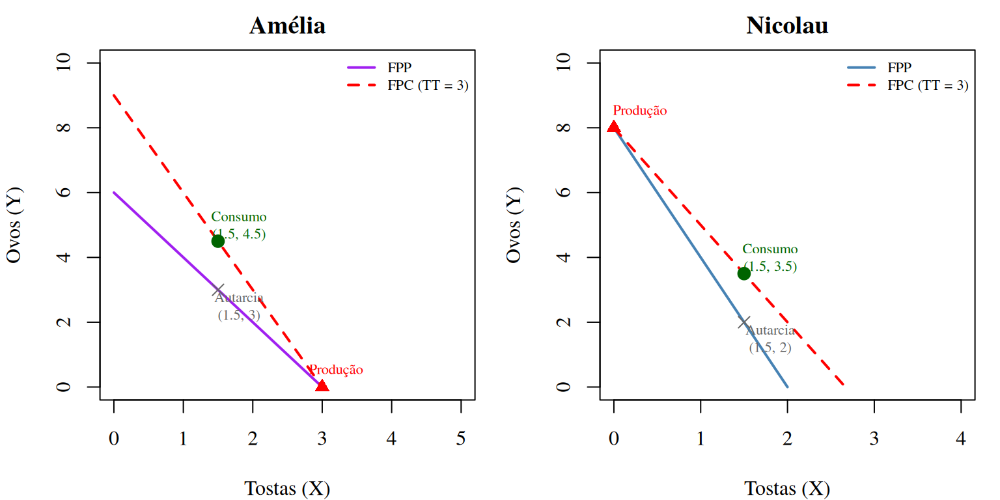

Aula Prática 2
Fronteira de Possibilidades de Produção e Comércio
2026-02-18
Estrutura da Aula
- Questões de conceitos sobre FPP (escolha múltipla)
- Exercício de FPP linear — Winterfell
- Exercício de FPP e Comércio — Brunch
Parte I — Questões de Conceitos
Questão 1 — Pontos na FPP
Num diagrama com a Fronteira de Possibilidades de Produção, um ponto situado abaixo (interior) da FPP representa:
- Uma combinação eficiente de produção.
- Uma combinação inatingível dados os recursos disponíveis.
- Uma combinação ineficiente, com desperdício de recursos.
- O ponto de produção ótima da economia.
Resposta: c) Pontos abaixo da FPP são ineficientes — a economia poderia produzir mais de pelo menos um dos bens sem reduzir a produção do outro. Pontos sobre a FPP são eficientes (Pareto). Pontos acima são inatingíveis.
Questão 2 — Custo de Oportunidade na FPP
Numa FPP linear entre o bem \(X\) (eixo horizontal) e o bem \(Y\) (eixo vertical), o custo de oportunidade de produzir uma unidade adicional de \(X\) é dado por:
- O declive da FPP (com sinal positivo).
- O valor absoluto do declive da FPP: \(\left|\frac{\Delta Y}{\Delta X}\right|\).
- A razão entre os preços dos dois bens.
- O inverso do declive da FPP.
Resposta: b) O custo de oportunidade de \(X\) é a Taxa Marginal de Transformação: \(TMT_{Y,X} = \left|\frac{\Delta Y}{\Delta X}\right|\), ou seja, quantas unidades de \(Y\) se sacrificam por cada unidade adicional de \(X\). Corresponde ao valor absoluto do declive da FPP.
Questão 3 — Custo Relativo Crescente
Se a FPP é côncava (como um ☔), isso significa que:
- O custo de oportunidade de \(X\) é constante.
- O custo de oportunidade de \(X\) é decrescente à medida que se produz mais \(X\).
- O custo de oportunidade de \(X\) é crescente à medida que se produz mais \(X\).
- Ambos os bens podem ser produzidos sem qualquer trade-off.
Resposta: c) Uma FPP côncava reflete custos de oportunidade crescentes: à medida que se produz mais \(X\), os recursos menos adequados à produção de \(X\) vão sendo utilizados, tornando cada unidade adicional mais “cara” em termos de \(Y\) sacrificado.
Questão 4 — Vantagem Comparativa
A vantagem comparativa na produção do bem \(X\) pertence ao agente que:
- Produz mais unidades de \(X\) em termos absolutos.
- Tem o menor custo de oportunidade na produção de \(X\).
- Tem os menores custos de produção em euros.
- Produz \(X\) com maior qualidade.
Resposta: b) A vantagem comparativa depende do custo de oportunidade relativo, não da quantidade absoluta produzida (isso seria vantagem absoluta). O agente que prescinde de menos do outro bem para produzir uma unidade de \(X\) tem vantagem comparativa em \(X\).
Questão 5 — Fronteira de Possibilidades de Consumo
Com comércio internacional, a Fronteira de Possibilidades de Consumo (FPC):
- Coincide sempre com a FPP.
- Situa-se necessariamente abaixo da FPP.
- Pode situar-se acima da FPP, permitindo consumir mais de ambos os bens.
- Só existe se ambos os países tiverem vantagem absoluta num bem.
Resposta: c) Com comércio, cada economia pode especializar-se segundo a sua vantagem comparativa e trocar, atingindo pontos de consumo que estariam acima da FPP em autarcia. A FPC tem declive igual à razão de preços internacionais (\(p_x/p_y\)) e passa pelo ponto de produção.
Parte II — Exercício FPP Linear
Exercício 1 — Winterfell (adaptado de exame)
O João das Neves tem um armazém de dimensão fixa em Winterfell para acumular mantimentos para o inverno: Cereais (\(Y\), eixo das ordenadas) e Carne (\(X\), eixo das abcissas).
- Máximo de Cereais (se não armazenar carne): 200 toneladas
- Máximo de Carne (se não armazenar cereais): 50 toneladas
- FPP linear.
a) Desenhe a FPP e apresente a sua equação.
b) Qual a TMT de carne em cereais?
c) Se armazenar 100 ton de cereais e 25 ton de carne, qual o custo de oportunidade de aumentar os cereais em 50%?
Exercício 1a — FPP de Winterfell
A FPP liga os pontos \((0, 200)\) e \((50, 0)\):
\[Y = 200 - 4X\]

Declive: \(\frac{\Delta Y}{\Delta X} = \frac{0 - 200}{50 - 0} = -4\)
Exercício 1b — TMT
\[TMT_{\text{cereais, carne}} = \left|\frac{\Delta Y}{\Delta X}\right| = 4\]
Cada tonelada adicional de carne custa 4 toneladas de cereais.
Inversamente, o custo relativo de cereais em termos de carne é:
\[CO_Y = \frac{1}{4} = 0{,}25 \text{ ton de carne por ton de cereais}\]
Exercício 1c — Custo de Oportunidade de mais cereais
Situação atual: \(X = 25\), \(Y = 100\).
Verificação: \(100 = 200 - 4 \times 25 = 100\) ✅ (ponto sobre a FPP)
Aumentar cereais em 50%: \(Y' = 100 \times 1{,}5 = 150\)
Nova carne: \(150 = 200 - 4X' \Rightarrow X' = 12{,}5\)
Custo de oportunidade = carne sacrificada = \(25 - 12{,}5 = \mathbf{12{,}5}\) toneladas de carne
Exercício 1c — Gráfico

Parte III — Exercício FPP e Comércio
Exercício 2 — O Brunch da Amélia e do Nicolau
A Amélia e o Nicolau preparam um brunch em 30 minutos. Fazem tostas (\(X\)) e ovos (\(Y\)). FPP lineares.
| Tostas (máx.) | Ovos (máx.) | |
|---|---|---|
| Amélia | 3 | 6 |
| Nicolau | 2 | 8 |
a) Apresente as FPP e interprete os declives.
b) Quem tem vantagem comparativa em ovos? E em tostas?
c) Admitindo termos de troca no centro do intervalo e que ambos consomem 1,5 tostas, quantos ovos consome cada um?
Exercício 2a — FPP da Amélia e do Nicolau
| Tostas máx. (\(X_0\)) | Ovos máx. (\(Y_0\)) | FPP | CO de 1 tosta | |
|---|---|---|---|---|
| Amélia | 3 | 6 | \(Y_A = 6 - 2X\) | 2 ovos |
| Nicolau | 2 | 8 | \(Y_N = 8 - 4X\) | 4 ovos |
Exercício 2b — Vantagem Comparativa
| Custo de oportunidade | Amélia | Nicolau | |
|---|---|---|---|
| 1 tosta (em ovos) | 2 | < | 4 |
| 1 ovo (em tostas) | 1/2 | > | 1/4 |
- Vantagem comparativa em tostas: Amélia (custo = 2 ovos < 4 ovos)
- Vantagem comparativa em ovos: Nicolau (custo = 1/4 tosta < 1/2 tosta)
Devem especializar-se: Amélia faz tostas, Nicolau faz ovos.
Exercício 2b — Termos de Troca
Para haver comércio mutuamente vantajoso, o preço de 1 tosta (em ovos) tem de estar entre os custos de oportunidade dos dois agentes:
\[2 < \frac{p_{\text{tosta}}}{p_{\text{ovo}}} < 4\]
Ou seja, 1 tosta deve trocar-se por entre 2 e 4 ovos.
Centro do intervalo: \(\frac{2 + 4}{2} = 3\) ovos por tosta.
Exercício 2c — Plano de Produção e Consumo
Com especialização total:
- Amélia produz: 3 tostas, 0 ovos
- Nicolau produz: 0 tostas, 8 ovos
Ambos querem consumir 1,5 tostas cada. A Amélia vende 1,5 tostas ao Nicolau a 3 ovos/tosta:
| Produção | Troca | Consumo | |
|---|---|---|---|
| Amélia — tostas | 3 | −1,5 | 1,5 |
| Amélia — ovos | 0 | +4,5 | 4,5 |
| Nicolau — tostas | 0 | +1,5 | 1,5 |
| Nicolau — ovos | 8 | −4,5 | 3,5 |
Exercício 2c — Ganhos do Comércio
Sem comércio (autarcia), se cada um consumisse 1,5 tostas:
- Amélia: \(Y_A = 6 - 2(1{,}5) = 3\) ovos
- Nicolau: \(Y_N = 8 - 4(1{,}5) = 2\) ovos
Com comércio e especialização:
| Autarcia (ovos) | Com comércio (ovos) | Ganho | |
|---|---|---|---|
| Amélia | 3 | 4,5 | +1,5 |
| Nicolau | 2 | 3,5 | +1,5 |
Ambos ganham 1,5 ovos com o comércio! 🎉
Exercício 2c — Gráfico com FPC
Resumo
Conceitos-Chave
Nesta aula praticámos:
- FPP linear: \(Y = Y_0 - \frac{Y_0}{X_0} X\), com custo de oportunidade constante
- TMT (Taxa Marginal de Transformação) = \(\left|\frac{\Delta Y}{\Delta X}\right|\) = declive da FPP
- Vantagem comparativa: menor custo de oportunidade relativo
- Termos de troca: devem estar entre os custos de oportunidade dos dois agentes
- FPC (Fronteira de Possibilidades de Consumo): declive = razão de preços ou termos de troca, a partir do ponto de produção
- Ganhos do comércio: especialização + troca → ambos consomem mais
Próxima matéria: Cabaz, Espaço e Restrição Orçamental